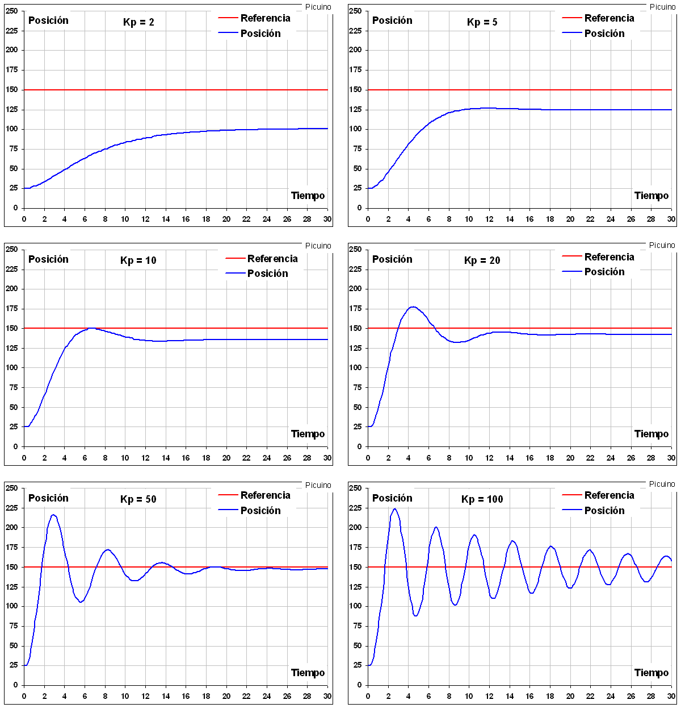
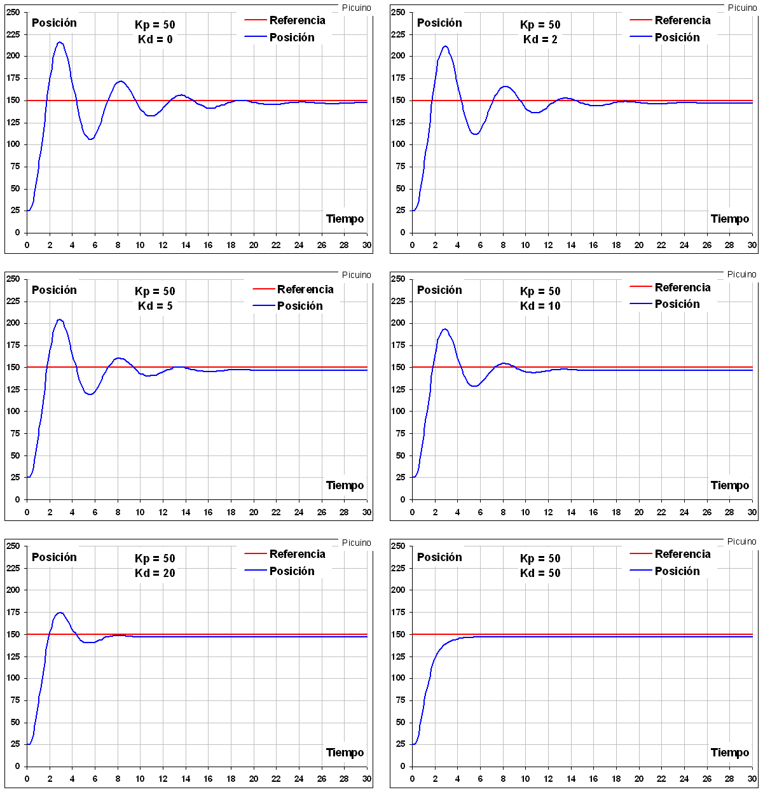
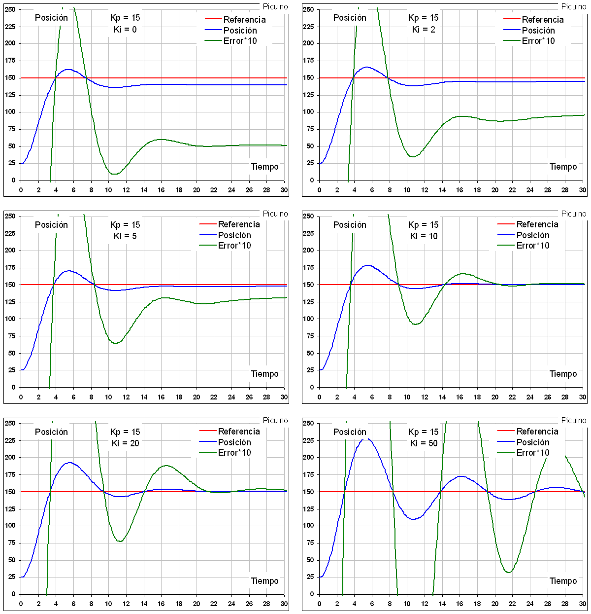

Controlador PID¶
Un controlador o regulador PID és un dispositiu que permet controlar un sistema de bucle tancat per arribar a l'estat de sortida desitjat. El controlador PID està compost per tres elements que proporcionen una acció proporcional, completa i derivada. Aquestes tres accions són les que donen nom al controlador PID.

Senyal de referència i senyal d’error¶
El senyal ** r (t) ** s’anomena ** referència ** i indica que l’estat s’aconsegueix a la sortida del sistema ** i (t) **.
La lletra ** t ** dins del parèntesi significa que els senyals canvien amb el pas del temps (t), és a dir, no es mantenen amb el mateix valor.
En un sistema de control de temperatura, la referència r (t) serà la temperatura desitjada i la sortida i (t) serà la temperatura real del sistema controlat, que canviarà amb el pas del temps.
Com es pot veure a l’esquema anterior, l’entrada al controlador PID és el senyal ** Error e (t) **. Aquest senyal indica al controlador la diferència entre l'estat que és aconseguir o fer referència r (t) i l'estat real del sensor mesurat, senyal ** h (t) **.
Si el senyal d’error és gran, vol dir que l’estat del sistema està lluny de l’estat de referència desitjat. Si, per contra, l'error és petit, vol dir que el sistema ha arribat a l'estat desitjat.
Acció de control proporcional¶
Com el seu nom indica, aquesta acció de control és proporcional al senyal d'error E (t). Internament l’acció proporcional multiplica el senyal d’error per una constant ** kp ** que determina la quantitat d’acció proporcional que tindrà el controlador.
Aquesta acció de control intenta minimitzar l'error del sistema. Quan l’error és gran, l’acció de control és gran i tendeix a minimitzar aquest error.
Augmenta l’acció proporcional ** KP ** té els efectes següents:
- Augmentar la velocitat de resposta del sistema.
- L’error del sistema disminueix en el règim permanent.
- Augmentar la inestabilitat del sistema.
Els dos primers efectes són positius i desitjables. L’últim efecte és negatiu i cal que es redueixi. En l'acció proporcional creixent, hi ha un punt d'equilibri en el qual s'aconsegueix la velocitat suficient de resposta del sistema i reducció d'errors, sense que el sistema sigui massa inestable. L’augment d’acció proporcional més enllà d’aquest punt produirà una inestabilitat indesitjable. Reduir l’acció proporcional reduirà la velocitat de resposta del sistema i augmentarà el vostre error permanent.
{kind=link}

En els gràfics anteriors es pot observar l'efecte de l'acció proporcional creixent progressivament en un control de posició.
- Amb una petita acció proporcional KP = 2, el sistema és lent, trigant 20 segons per arribar a la posició desitjada i l’error de posició és gran, 50 mil·límetres. A mesura que l’acció proporcional augmenta, l’error disminueix i la velocitat de resposta augmenta.
- Amb un guany proporcional KP = 20 El sistema és més ràpid, trigant 12 segons a establir la posició permanent. L’error també s’ha reduït a una desena, només 5 mil·límetres. També podeu observar un Overpulso en la resposta i l’inici d’una certa inestabilitat.
- Amb guanys més grans, es redueix encara més un error permanent, però la velocitat de resposta no augmenta perquè el sistema es fa tan inestable que la posició triga molt a establir -se en el seu estat final.
En aquest exemple, s'ha augmentat una acció proporcional de manera que els seus valors estiguin entre 0 i 100.
En aquest moment, es pot veure que l’acció proporcional ja no pot millorar la resposta del sistema. La millor opció amb kp = 20 presenta un sobrepulum d’uns 30 mil·límetres i un error permanent de 5 mil·límetres. Si voleu millorar aquesta resposta, cal incorporar un altre tipus de control. Aquí és on el control derivat pot ajudar a millorar la resposta del sistema.
Acció de control derivat¶
Com el seu nom indica, aquesta acció de control és proporcional a la derivada del senyal d'error ** e (t) ** multiplicat per la constant ** kd **. La derivada de l'error és una altra manera de cridar la "velocitat " de l'error. Aleshores veureu per què és tan important calcular aquesta velocitat. En els gràfics anteriors, quan la posició és inferior a 150 mm, l’acció de control proporcional sempre intenta augmentar la posició. El problema té en compte la inèrcia. Quan el sistema es mou a una gran velocitat cap al punt de referència, el sistema passarà a causa de la seva inèrcia. Això produeix un sobrepuls i oscil·lacions al voltant de la referència. Per evitar aquest problema, el controlador ha de reconèixer la velocitat amb què el sistema s’acosta a la referència per poder aturar -lo amb antelació a mesura que s’acosta a la referència desitjada i evitar que la superi.
Augmenteu la constant de control derivat ** KD ** té els efectes següents:
- Augmenta l’estabilitat del sistema controlat.
- La velocitat del sistema disminueix una mica.
- L’error de règim permanent es mantindrà el mateix.
Per tant, aquesta acció de control servirà per estabilitzar una resposta que oscil·la massa.
{kind=link}

En els gràfics anteriors es pot veure com, augmentant l’acció derivada KD, és possible reduir les oscil·lacions fins al punt que desapareixen per KD = 50. També es pot veure com la resposta es fa una mica més lenta augmentant la constant derivada. Amb KD = 0 El sistema triga 1,8 segons a pujar al valor de referència. Amb KD = 20 El sistema triga 2 segons a pujar al valor de referència. En aquest exemple, l'acció derivada s'ha pujat de manera que els seus valors estiguin entre 0 i 100.
Un problema que presenta el control derivat és que amplifica els senyals que varien ràpidament, per exemple, el soroll d’alta freqüència. A causa d'aquest efecte, el soroll del senyal d'error apareix amplificat a la unitat de la planta. Per tal de reduir aquest efecte, és necessari reduir el soroll del senyal d’error mitjançant un filtre de passada baixa <https://es.wikipedia.org/wiki/filtro_paso_bajo>`__ abans d’aplicar -lo al terme derivat. Amb aquest filtre, l’acció derivada és limitada, per la qual cosa és desitjable reduir el soroll del senyal d’error per altres mitjans abans de recórrer a un filtre de passada baixa.
Arribats a aquest punt, el sistema és ràpid i estable, però encara manté un petit error en el règim permanent. Això significa que la posició real del sistema no és exactament la posició desitjada. Per poder reduir aquest error, s’utilitza la tercera acció del controlador PID, un control complet.
Acció de control integral¶
Aquesta acció de control, com el seu nom indica, calcula la integral del senyal ** Error e (t) ** i es multiplica per la constant ** ki **. La integral es pot veure com la suma o l’acumulació del senyal d’error. A mesura que passen petits errors, s’afegeixen per augmentar l’acció integral. Amb això, és possible reduir l’error del sistema en règim permanent. L’inconvenient d’utilitzar l’acció integral és que afegeix una certa inèrcia al sistema i, per tant, la fa més inestable.
Augmenta l’acció integral ** Ki ** té els efectes següents:
- L’error del sistema disminueix en el règim permanent.
- Augmentar la inestabilitat del sistema.
- Augmentar la velocitat del sistema.
Aquesta acció de control reduirà l’error en règim permanent.
{kind=link}

En els gràfics anteriors, s'ha afegit un senyal d'error ampliat i verd, per apreciar millor com es redueix l'error a mesura que augmenta l'acció integral. Un altre efecte visible és l’augment de la inestabilitat del sistema a mesura que augmenta el KI. Per aquest motiu, el control integral es combina generalment amb el control derivat per evitar les oscil·lacions del sistema.
Ajustar manual d’un controlador pregunta¶
Després de veure les diferents accions proporcionals, integrals i derivades d’un control PID, es poden aplicar regles simples per ajustar aquest controlador manualment.
** 1r - Acció proporcional. **
L’acció proporcional s’incrementa gradualment per reduir l’error (diferència entre l’estat desitjat i l’estat aconseguit) i per augmentar la velocitat de resposta.
Si s’arriba a la velocitat i l’error desitjats, el PID ja està ajustat.
Si el sistema es fa inestable abans de rebre la resposta desitjada, cal augmentar l'acció derivada.
** 2n - Acció derivada. **
Si el sistema és massa inestable, la constant derivada de KD s’incrementarà gradualment per aconseguir l’estabilitat de resposta de nou.
** 3r - Acció completa. **
En el cas que l’error del sistema sigui superior a l’anada, s’incrementarà la constant integral de Ki fins que es minimitzi l’error amb la rapidesa desitjada.
Si el sistema es fa inestable abans de rebre la resposta desitjada, cal augmentar l'acció derivada.
Amb aquestes regles senzilles, és fàcil perfeccionar gradualment el controlador PID fins que s’aconsegueixi la resposta desitjada.
Equació del controlador¶
L’equació de control PID és la següent:
Per:
- C (t) = senyal de control
- E (t) = senyal d'error
- KP, KI, KD = Paràmetres del controlador Pregunta
Saturació i límits del controlador pregunten¶
En sistemes reals hi ha limitacions que redueixen la capacitat del controlador per aconseguir la resposta desitjada. Per molt que augmenti l’acció proporcional, arribarà un moment en què l’actuador es saturarà i no podrà donar -li més coses. Per exemple, en un sistema de control de temperatura, la resistència a la calefacció pot proporcionar potència a 2000 watts. Si el controlador intenta proporcionar més energia per aconseguir més velocitat de calefacció, no pot ser i el sistema no aconseguirà més ràpidament. Tot i que l’acció de control proporcional s’incrementa, el límit de l’actuador de 2000 watts limita la velocitat màxima de calefacció.
Per tant, hem de tenir en compte que la velocitat de resposta dels sistemes reals té certs límits que el control no pot superar.
Sol·licitar controladors¶
Aquest petit programa simula automàticament un cotxe guiat i controlat per un controlador PID. L’objectiu del programa és aprendre a modificar els paràmetres del controlador PID per aconseguir que el cotxe es posicioni ràpidament i sense error.
: Descàrrega: `Control de moviment. 0,31 Versió <control/_downloads/moviment-control-031.zip> `
Aquest altre programa simula la calefacció d’una caldera que s’utilitza per escalfar aigua de calefacció. El sistema tèrmic utilitza dos controls PID per controlar les dues temperatures de l’aigua diferents.
: Descarregueu: `Control temal. 0.11 Versió <Control/_Downloads/Themal-Control-011.zip> `
Referències¶
[1] Ogata, Katsuhiko. Enginyeria de control moderna. Tercera edició. Saló de Prentice Editorial.
[2] Ogata, Katsuhiko. Sistemes de control de temps discrets. Segona edició. Saló de Prentice Editorial.